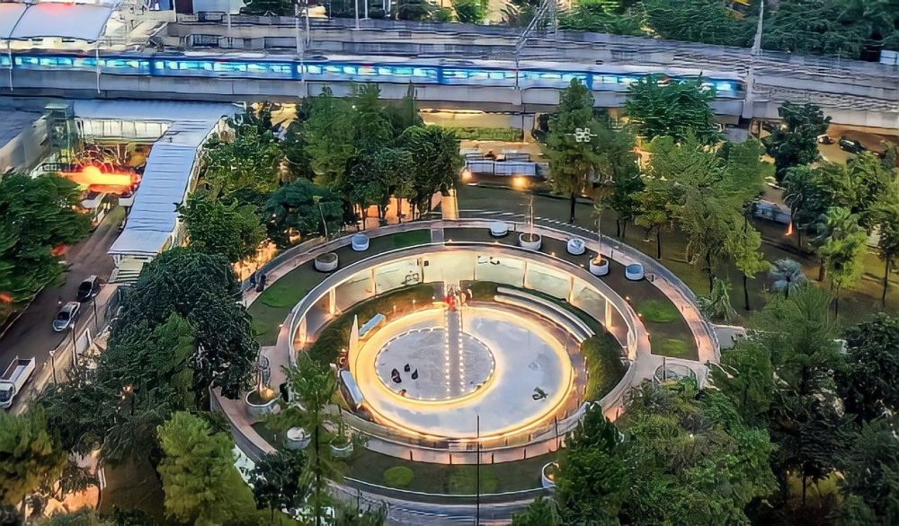
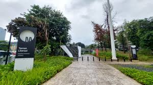
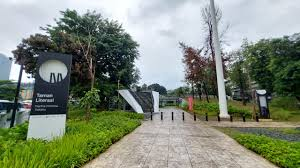

TAMAN LITERASI MARTHA CHRISTINA TIAHAHU
Lativa Mauizhotul Tsalisun

Taman Literasi modern dengan desain unik dan instagrameable
menjadi tren populer.
Taman Literasi Martha Christina Tiahahu menjadi tempat rekomendasi untuk belajar sekaligus tempat nugas gratis yang berada di Blok M Jakarta Selatan. Taman ini diresmikan oleh Gubernur DKI Jakarta Anies Baswedan.Akhir-akhir ini banyak anak remaja yang berbondong-bondong datang ke taman literasi untuk menonton konser. Banyak konser gratis yang diadakan di taman literasi pada tahun ini, seperti acara Hari MRT pada tanggal 24-26 Maret 2013 yang diisi oleh musisi Indonesia Feby Putri, Sal Priadi, Salon RNB, dan banyak musisi lainnya. Ada juga Performer HIVI pada acara Ramadan FestiFAV's pada 15 April 2023. Pada 21 April 2023 Rizky Febian juga mengadakan Release Party album baru nya yang berkolaborasi dengan Teddy Aditya, Gangga, dan Basboi.
Seiring perkembangan waktu Taman Literaasi Blok M dapat menyelenggarakan berbagai acara, konser, dan festival untuk memperkaya pengalaman pengunjung dan mendukung keberagaman kegiatan budaya.
 

KONSER GRATIS
Menyelenggarakan Konser dan aktivitas lainnya.
KONSER MUSIK
Menyelenggarakan konser musik dengan berbagai genre, melibatkan musisi lokal.
KONSER MUSIK FESTIV
konser-konser gratis ini membuat anak remaja hingga orang tua banyak yang berdatangan untuk menikmati konser gratis dengan suasana taman yang asri dan indah.Pengunjung memiliki beberapa opsi transportasi umum untuk menuju Taman Literasi Martha Christina Tiahahu.
Untuk selengkapnya, klik disini!